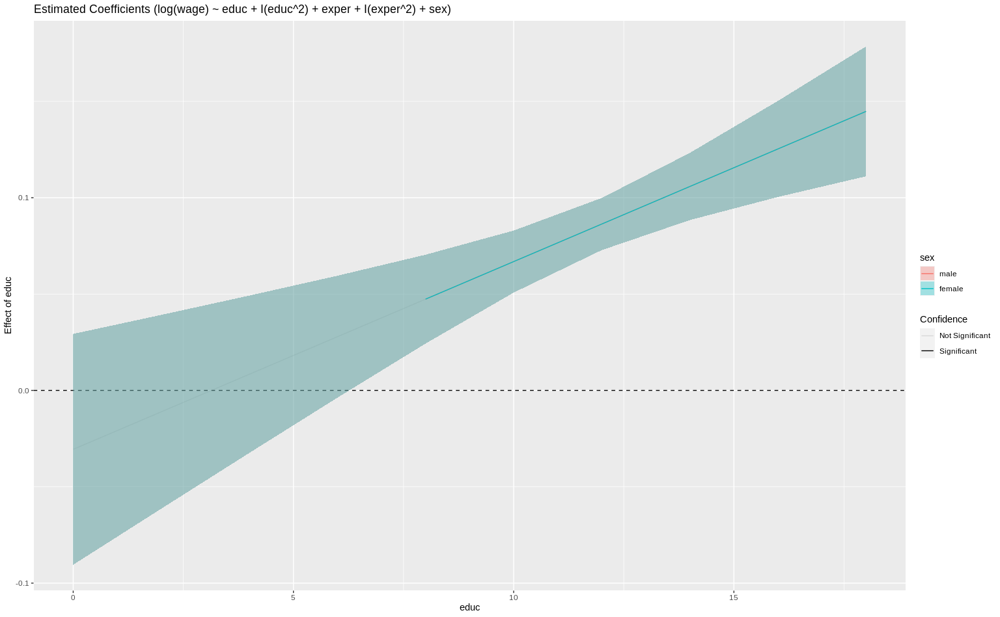
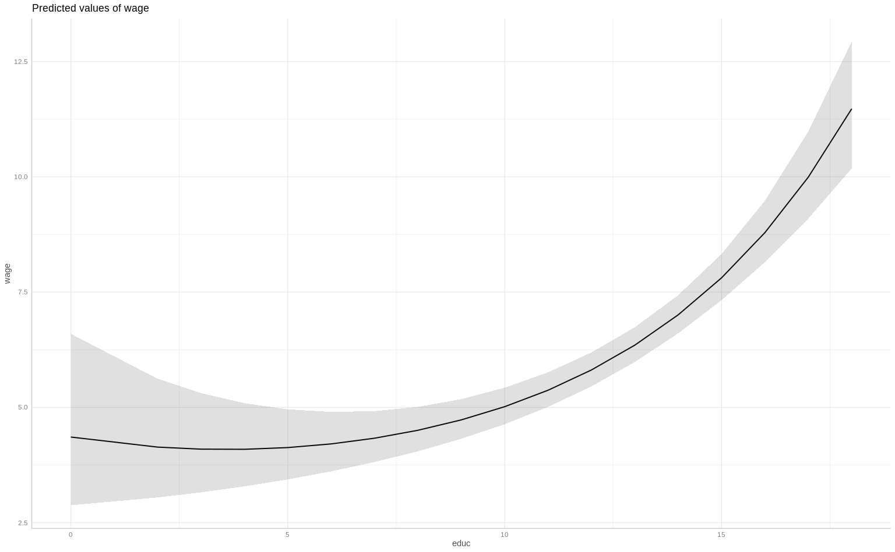

library(tidyverse)
library(alr4)
library(GGally)
library(parameters)
library(performance)
library(see)
library(car)
library(broom)
library(modelsummary)
library(texreg)
library(correlation)
library(patchwork)
library(lmtest)
library(sandwich)
library(clubSandwich)
library(forcats)
library(modelbased)
library(emmeans)
library(ggeffects)
knitr::opts_chunk$set(
fig.align = "center",
fig.width = 16,
fig.asp = 0.618,
fig.retina = 1,
out.width = "100%",
message = FALSE,
warning = FALSE,
echo = TRUE
)AE06-01 linear transformation and interaction term: the toolbox
Setup
Goals:
- Learn what is the interaction term in regression and how to use it;
Exercise 1. Interaction with a dummy variable
1.1 Load data, compute, select, filter
- total amount of parents education
pareduas a sum of years of their education
dta <-
wooldridge::wage1 %>%
as_tibble() %>%
mutate(sex = ifelse(female == 0, "male", "female") %>%
as_factor() %>%
fct_rev()) %>%
select(wage, educ, exper, sex)Variables are:
wage: average hourly earningseduc: years of educationexper: years potential experiencesex: sex of the respondents
1.2 Built pairs plot and descriptive statistics
library(GGally)
ggpairs(dta, aes(group = sex, colour = sex, alpha = 0.3))library(modelsummary)
dta %>% datasummary_skim()| Unique (#) | Missing (%) | Mean | SD | Min | Median | Max | ||
|---|---|---|---|---|---|---|---|---|
| wage | 241 | 0 | 5.9 | 3.7 | 0.5 | 4.7 | 25.0 | |
| educ | 18 | 0 | 12.6 | 2.8 | 0.0 | 12.0 | 18.0 | |
| exper | 51 | 0 | 17.0 | 13.6 | 1.0 | 13.5 | 51.0 |
1.3 Regression without interaction terms
fit_1 <- lm(wage ~ educ + exper + sex, data = dta)
parameters(fit_1)Parameter | Coefficient | SE | 95% CI | t(522) | p
--------------------------------------------------------------------
(Intercept) | -1.73 | 0.75 | [-3.21, -0.25] | -2.30 | 0.022
educ | 0.60 | 0.05 | [ 0.50, 0.70] | 11.79 | < .001
exper | 0.06 | 0.01 | [ 0.04, 0.08] | 6.18 | < .001
sex [female] | -2.16 | 0.27 | [-2.69, -1.62] | -7.97 | < .001performance(fit_1)# Indices of model performance
AIC | BIC | R2 | R2 (adj.) | RMSE | Sigma
-------------------------------------------------------
2681.472 | 2702.798 | 0.309 | 0.305 | 3.066 | 3.078Diagnostics
check_model(fit_1, check = c("linearity", "homogeneity"))
1.4 Attempting to resolve linearity
- Introduce squared education and experience terms.
# fit_2 <- lm(log(wage) ~ educ + ______ + exper + ______ + sex,
# data = dta)
# parameters(fit_2)
# performance(fit_2)
# check_model(fit_2, check = c("linearity", "homogeneity"))1.5 Computing fitted values
Calculate fitted values based on the regressionfit_2 for:
- a women and men;
- with 10 and 11 years of experience;
- 10, 11, 16 and 17 years of education;
Built a tibble() with the covariates for prediction:
# pred_dta_1 <-
# tibble(
# sex = ______,
# ______ = c(10, 11, ______, 10, 11, 16, 17),
# exper = ______
# ) %>%
# bind_rows(mutate(., sex = "male"))Predict fitted values and write them to the variable fitted
# ______(______, pred_dta_1)
#
# pred_dta_2 <-
# pred_dta_1 %>%
# mutate(fitted_values = ______(______, pred_dta_1))Compute predicted salary and save it into the variable pred_wage;
# pred_dta_3 <-
# pred_dta_2 %>%
# mutate(pred_wage = ______(fitted_values))
# pred_dta_31.6 Computing slope for squared term
The slope depends on the value of regressor
\(\frac{\partial \text{ wage}}{\partial \text{ educ}} = -0.0306529 + 2 \times 0.0048716 \times \text{educ}\)
What is the effect of an additional year of education on wage, given that current level of education is 10 or 16 years?
- Estimate slopes manually and using
modelbased; - Interpret the results;
- Plot the slope;
- What is the meaning of the shaded area?
library(modelbased)
library(emmeans)
## Estimate slope of educ for 10 and 11 years of education, manually
# parameters(fit_2)
# ______ + ______ * ______ * ______
# ______ + ______ * ______ * ______
# # Estimating slopes manually for our data
# pred_dta_3 %>%
# select(- pred_wage ) %>%
# pivot_wider(names_from = educ, values_from = fitted_values) %>%
# mutate(beta_educ_10_11 = `11`-`10`,
# beta_educ_16_17 = `17`-`16`)
# # Using function estimate_slopes
# estimate_slopes(fit_2, trend = "educ")
#
# # add `at = "educ"`
# estimate_slopes(fit_2, trend = ______, at = "educ")
#
# # Add `at = list(educ = c(10, 11))`
# estimate_slopes(fit_2, trend = ______, at = list(educ = c(10, 11)))
#
# # adding plot
# estimate_slopes(fit_2, trend = ______, at = ______) %>% plot()
#
# # adding plot at sex and education
# estimate_slopes(fit_2, trend = ______, at = c("educ", "sex")) %>% ______()Marginal effects to report
1.7 Predicted values given linear transformation
library(ggeffects)
# pred_dta_3
#
# # using ggpredict
# ggpredict(fit_2, terms = "educ")
#
# # back.transform = F
# ggpredict(fit_2, ______ = "educ", back.transform = F)
#
# # `terms = c("educ", "sex")`
# ggpredict(fit_2, terms = c("educ", "sex"), ______)
#
# # Plotting
# ggpredict(fit_2, ______ = "educ", back.transform = F) %>% plot()
# ggpredict(fit_2, ______) %>% plot()
# ggpredict(fit_2, terms = c(______)) %>% plot()1.8 Effect of a dummy variable
In the regression coefficients, sex variable has a coefficient of -0.32
# ggpredict(fit_2, ______ = "sex") %>% plot()
# ggpredict(fit_2, ______ = "sex", back.transform = F)
# parameters(fit_2)Exercise 2. Interaction term
2.1 Adding an interaction term between sex and education
# fit_3 <- lm(log(wage) ~
# educ + I(educ ^ 2) + exper + I(exper ^ 2) + sex +
# ______,
# data = dta)
# parameters(fit_3)
# performance(fit_3)
# check_model(fit_3, check = c("linearity", "homogeneity"))2.2 Interpreting the interaction term
Interpreting the changing slopes
# estimate_slopes(______, ______ = "educ", at = "educ") %>% plot()
# estimate_slopes(______, ______ = "educ", ______ = c("sex", "educ")) %>% plot()
# estimate_slopes(______, ______ = "educ", ______ = c("sex")) %>% plot()Interpreting the fitted values
# ggpredict(______, ______ = "educ") %>% plot()
# ggpredict(______, ______ = c("sex", "educ")) %>% plot()
# ggpredict(______, ______ = c("educ", "sex")) %>% plot()
# ggpredict(______, ______ = c("educ", "sex")) %>% plot(add.data = TRUE)Solutions
Code
dta <-
wooldridge::wage1 %>%
as_tibble() %>%
mutate(sex = ifelse(female == 0, "male", "female") %>%
as_factor() %>%
fct_rev(),
lwage = log(wage)) %>%
select(lwage, wage, educ, exper, sex)
# 1.2 Built pairs plot and descriptive statistics
library(GGally)
ggpairs(dta, aes(group = sex, colour = sex, alpha = 0.3))Code
library(modelsummary)
dta %>% datasummary_skim()| Unique (#) | Missing (%) | Mean | SD | Min | Median | Max | ||
|---|---|---|---|---|---|---|---|---|
| lwage | 241 | 0 | 1.6 | 0.5 | 0.6 | 1.5 | 3.2 | |
| wage | 241 | 0 | 5.9 | 3.7 | 0.5 | 4.7 | 25.0 | |
| educ | 18 | 0 | 12.6 | 2.8 | 0.0 | 12.0 | 18.0 | |
| exper | 51 | 0 | 17.0 | 13.6 | 1.0 | 13.5 | 51.0 |
Code
# 1.3 Regression without interaction terms
fit_1 <- lm(wage ~ educ + exper + sex, data = dta)
parameters(fit_1)Parameter | Coefficient | SE | 95% CI | t(522) | p
--------------------------------------------------------------------
(Intercept) | -1.73 | 0.75 | [-3.21, -0.25] | -2.30 | 0.022
educ | 0.60 | 0.05 | [ 0.50, 0.70] | 11.79 | < .001
exper | 0.06 | 0.01 | [ 0.04, 0.08] | 6.18 | < .001
sex [female] | -2.16 | 0.27 | [-2.69, -1.62] | -7.97 | < .001Code
performance(fit_1)# Indices of model performance
AIC | BIC | R2 | R2 (adj.) | RMSE | Sigma
-------------------------------------------------------
2681.472 | 2702.798 | 0.309 | 0.305 | 3.066 | 3.078Code
check_model(fit_1, check = c("linearity", "homogeneity"))
Code
# 1.4 Attempting to resolve linearity
fit_2 <- lm(log(wage) ~ educ + I(educ ^ 2) + exper + I(exper ^ 2) + sex,
data = dta)
parameters(fit_2)Parameter | Coefficient | SE | 95% CI | t(520) | p
------------------------------------------------------------------------
(Intercept) | 1.02 | 0.19 | [ 0.64, 1.39] | 5.32 | < .001
educ | -0.03 | 0.03 | [-0.09, 0.03] | -1.00 | 0.316
educ^2 | 4.87e-03 | 1.26e-03 | [ 0.00, 0.01] | 3.86 | < .001
exper | 0.04 | 4.77e-03 | [ 0.03, 0.05] | 8.37 | < .001
exper^2 | -7.19e-04 | 1.06e-04 | [ 0.00, 0.00] | -6.76 | < .001
sex [female] | -0.32 | 0.04 | [-0.39, -0.25] | -8.84 | < .001Code
performance(fit_2)# Indices of model performance
AIC | BIC | R2 | R2 (adj.) | RMSE | Sigma
-------------------------------------------------------
2265.351 | 4002.887 | 0.416 | 0.411 | 0.406 | 0.408Code
check_model(fit_2, check = c("linearity", "homogeneity"))Code
# 1.5 Computing fitted values
pred_dta_1 <-
tibble(
sex = "female",
educ = c(10, 11, 16, 17, 10, 11, 16, 17),
exper = c(10, 10, 10, 10, 11, 11, 11, 11)
) %>%
bind_rows(mutate(., sex = "male"))
# Predict fitted values and write them to the variable fitted
pred_dta_2 <-
pred_dta_1 %>%
mutate(fitted_values = predict(fit_2, pred_dta_1))
# Compute predicted salary and save it into the variable `pred_wage`;
pred_dta_3 <-
pred_dta_2 %>%
mutate(pred_wage = exp(fitted_values))
pred_dta_3# A tibble: 16 5
sex educ exper fitted_values pred_wage
<chr> <dbl> <dbl> <dbl> <dbl>
1 female 10 10 1.21 3.34
2 female 11 10 1.28 3.58
3 female 16 10 1.78 5.94
4 female 17 10 1.91 6.76
5 female 10 11 1.23 3.42
6 female 11 11 1.30 3.67
7 female 16 11 1.81 6.09
8 female 17 11 1.94 6.93
9 male 10 10 1.52 4.59
10 male 11 10 1.60 4.93
11 male 16 10 2.10 8.17
12 male 17 10 2.23 9.31
13 male 10 11 1.55 4.71
14 male 11 11 1.62 5.06
15 male 16 11 2.13 8.38
16 male 17 11 2.26 9.54Code
# 1.6 Computing slope for squared term
library(modelbased)
library(emmeans)
# Estimate slope of educ for 10 and 11 years of education, manually
-0.0306529 + 0.0048716 * 2 * 10[1] 0.0667791Code
-0.0306529 + 0.0048716 * 2 * 11[1] 0.0765223Code
# Estimating slopes manually for our data
pred_dta_3 %>%
# filter(educ %in% c(10, 11)) %>%
select(- pred_wage ) %>%
pivot_wider(names_from = educ, values_from = fitted_values) %>%
mutate(beta_educ_10_11 = `11`-`10`,
beta_educ_16_17 = `17`-`16`)# A tibble: 4 8
sex exper `10` `11` `16` `17` beta_educ_10_11 beta_educ_16_17
<chr> <dbl> <dbl> <dbl> <dbl> <dbl> <dbl> <dbl>
1 female 10 1.21 1.28 1.78 1.91 0.0717 0.130
2 female 11 1.23 1.30 1.81 1.94 0.0717 0.130
3 male 10 1.52 1.60 2.10 2.23 0.0717 0.130
4 male 11 1.55 1.62 2.13 2.26 0.0717 0.130Code
# Using function estimate_slopes
estimate_slopes(fit_2, trend = "educ")Estimated Marginal Effects
Coefficient | SE | 95% CI | t(520) | p
-------------------------------------------------------
0.09 | 7.15e-03 | [0.08, 0.11] | 12.85 | < .001
Marginal effects estimated for educCode
# add `at = "educ"`
estimate_slopes(fit_2, trend = "educ", at = "educ")Estimated Marginal Effects
educ | Coefficient | SE | 95% CI | t(520) | p
----------------------------------------------------------------
0.00 | -0.03 | 0.03 | [-0.09, 0.03] | -1.00 | 0.317
2.00 | -0.01 | 0.03 | [-0.06, 0.04] | -0.43 | 0.665
4.00 | 8.41e-03 | 0.02 | [-0.03, 0.05] | 0.40 | 0.686
6.00 | 0.03 | 0.02 | [ 0.00, 0.06] | 1.73 | 0.084
8.00 | 0.05 | 0.01 | [ 0.02, 0.07] | 4.04 | < .001
10.00 | 0.07 | 8.19e-03 | [ 0.05, 0.08] | 8.16 | < .001
12.00 | 0.09 | 6.89e-03 | [ 0.07, 0.10] | 12.53 | < .001
14.00 | 0.11 | 8.87e-03 | [ 0.09, 0.12] | 11.93 | < .001
16.00 | 0.13 | 0.01 | [ 0.10, 0.15] | 9.88 | < .001
18.00 | 0.14 | 0.02 | [ 0.11, 0.18] | 8.44 | < .001
Marginal effects estimated for educCode
# Add `at = list(educ = c(10, 11))`
estimate_slopes(fit_2, trend = "educ", at = list(educ = c(10, 11)))Estimated Marginal Effects
educ | Coefficient | SE | 95% CI | t(520) | p
---------------------------------------------------------------
10.00 | 0.07 | 8.19e-03 | [0.05, 0.08] | 8.16 | < .001
11.00 | 0.08 | 7.14e-03 | [0.06, 0.09] | 10.73 | < .001
Marginal effects estimated for educCode
# adding plot
estimate_slopes(fit_2, trend = "educ", at = "educ") %>% plot()Code
# adding plot at sex and education
estimate_slopes(fit_2, trend = "educ", at = c("educ", "sex")) %>% plot()
Code
# 1.7 Predicted values given linear transformation
library(ggeffects)
pred_dta_3# A tibble: 16 5
sex educ exper fitted_values pred_wage
<chr> <dbl> <dbl> <dbl> <dbl>
1 female 10 10 1.21 3.34
2 female 11 10 1.28 3.58
3 female 16 10 1.78 5.94
4 female 17 10 1.91 6.76
5 female 10 11 1.23 3.42
6 female 11 11 1.30 3.67
7 female 16 11 1.81 6.09
8 female 17 11 1.94 6.93
9 male 10 10 1.52 4.59
10 male 11 10 1.60 4.93
11 male 16 10 2.10 8.17
12 male 17 10 2.23 9.31
13 male 10 11 1.55 4.71
14 male 11 11 1.62 5.06
15 male 16 11 2.13 8.38
16 male 17 11 2.26 9.54Code
# using ggpredict
ggpredict(fit_2, terms = "educ")# Predicted values of wage
educ | Predicted | 95% CI
---------------------------------
0 | 4.16 | [ 2.86, 6.03]
3 | 3.96 | [ 3.16, 4.97]
5 | 4.03 | [ 3.45, 4.71]
7 | 4.26 | [ 3.82, 4.74]
10 | 4.98 | [ 4.63, 5.36]
12 | 5.80 | [ 5.45, 6.18]
14 | 7.03 | [ 6.64, 7.45]
18 | 11.60 | [10.37, 12.98]
Adjusted for:
* exper = 13.50
* sex = maleCode
# back.transform = F
ggpredict(fit_2, terms = "educ", back.transform = F)# Predicted values of wage
educ | Predicted | 95% CI
-------------------------------
0 | 1.42 | [1.05, 1.80]
3 | 1.38 | [1.15, 1.60]
5 | 1.39 | [1.24, 1.55]
7 | 1.45 | [1.34, 1.56]
10 | 1.61 | [1.53, 1.68]
12 | 1.76 | [1.70, 1.82]
14 | 1.95 | [1.89, 2.01]
18 | 2.45 | [2.34, 2.56]
Adjusted for:
* exper = 13.50
* sex = maleCode
# `terms = c("educ", "sex")`
ggpredict(fit_2, terms = c("educ", "sex"), back.transform = F)# Predicted values of wage
# sex = male
educ | Predicted | 95% CI
-------------------------------
0 | 1.42 | [1.05, 1.80]
4 | 1.38 | [1.19, 1.57]
7 | 1.45 | [1.34, 1.56]
10 | 1.61 | [1.53, 1.68]
12 | 1.76 | [1.70, 1.82]
18 | 2.45 | [2.34, 2.56]
# sex = female
educ | Predicted | 95% CI
-------------------------------
0 | 1.10 | [0.73, 1.48]
4 | 1.06 | [0.87, 1.25]
7 | 1.13 | [1.02, 1.24]
10 | 1.29 | [1.21, 1.36]
12 | 1.44 | [1.38, 1.50]
18 | 2.13 | [2.01, 2.25]
Adjusted for:
* exper = 13.50Code
# Plotting
ggpredict(fit_2, terms = "educ", back.transform = F) %>% plot()
Code
ggpredict(fit_2, terms = "educ") %>% plot()Code
ggpredict(fit_2, terms = c("educ", "sex")) %>% plot()Code
# 1.8 Effect of a dummy variable
ggpredict(fit_2, terms = "sex") %>% plot()Code
ggpredict(fit_2, terms = "sex", back.transform = F)# Predicted values of wage
sex | Predicted | 95% CI
---------------------------------
male | 1.76 | [1.70, 1.82]
female | 1.44 | [1.38, 1.50]
Adjusted for:
* educ = 12.00
* exper = 13.50Code
parameters(fit_2)Parameter | Coefficient | SE | 95% CI | t(520) | p
------------------------------------------------------------------------
(Intercept) | 1.02 | 0.19 | [ 0.64, 1.39] | 5.32 | < .001
educ | -0.03 | 0.03 | [-0.09, 0.03] | -1.00 | 0.316
educ^2 | 4.87e-03 | 1.26e-03 | [ 0.00, 0.01] | 3.86 | < .001
exper | 0.04 | 4.77e-03 | [ 0.03, 0.05] | 8.37 | < .001
exper^2 | -7.19e-04 | 1.06e-04 | [ 0.00, 0.00] | -6.76 | < .001
sex [female] | -0.32 | 0.04 | [-0.39, -0.25] | -8.84 | < .001Code
# Exercise 2. Interaction term
## 2.1 Adding an interaction term between sex and education
fit_3 <- lm(log(wage) ~
educ + I(educ ^ 2) + exper + I(exper ^ 2) + sex +
educ:sex,
data = dta)
parameters(fit_3)Parameter | Coefficient | SE | 95% CI | t(519) | p
-------------------------------------------------------------------------------
(Intercept) | 1.06 | 0.21 | [ 0.65, 1.48] | 5.02 | < .001
educ | -0.04 | 0.03 | [-0.10, 0.03] | -1.11 | 0.267
educ^2 | 4.97e-03 | 1.28e-03 | [ 0.00, 0.01] | 3.89 | < .001
exper | 0.04 | 4.77e-03 | [ 0.03, 0.05] | 8.37 | < .001
exper^2 | -7.22e-04 | 1.07e-04 | [ 0.00, 0.00] | -6.78 | < .001
sex [female] | -0.41 | 0.17 | [-0.74, -0.07] | -2.37 | 0.018
educ * sex [female] | 6.90e-03 | 0.01 | [-0.02, 0.03] | 0.51 | 0.608 Code
performance(fit_3)# Indices of model performance
AIC | BIC | R2 | R2 (adj.) | RMSE | Sigma
-------------------------------------------------------
2267.084 | 4008.885 | 0.417 | 0.410 | 0.406 | 0.408Code
check_model(fit_3, check = c("linearity", "homogeneity"))Code
## 2.2 Interpreting the interaction term
estimate_slopes(fit_3, trend = "educ", at = "educ") %>% plot()Code
estimate_slopes(fit_3, trend = "educ", at = c("sex", "educ")) %>% plot()Code
estimate_slopes(fit_3, trend = "educ", at = c("sex")) %>% plot()Code
ggpredict(fit_3, terms = "educ") %>% plot()
Code
ggpredict(fit_3, terms = c("sex", "educ")) %>% plot()Code
ggpredict(fit_3, terms = c("educ", "sex")) %>% plot()Code
ggpredict(fit_3, terms = c("educ", "sex")) %>% plot(add.data = TRUE)